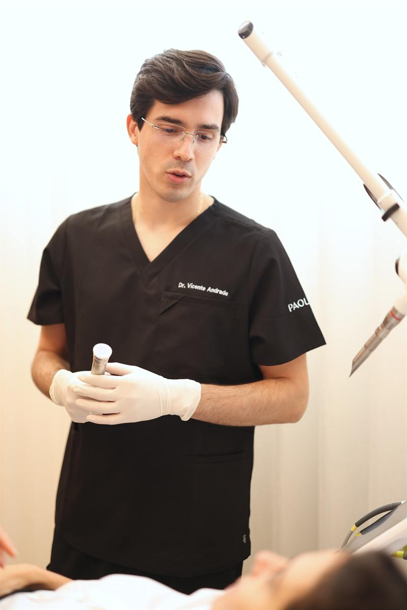
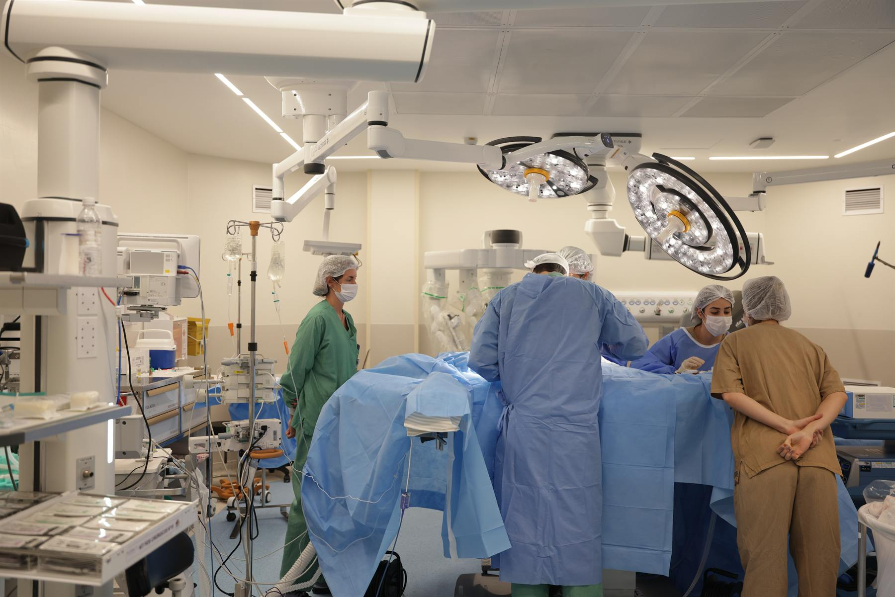

Especialidade
Cirurgia Plástica
Contorno corporal, mama, face e cirurgia íntima. Consultas e acompanhamento na clínica; cirurgias realizadas no Hospital Vila Nova Star.
A cirurgia plástica na Paoliello Clinic começa por uma consulta longa: exame, escuta e uma explicação clara das possibilidades, inclusive a de não operar. Quando há indicação, o plano é construído com o paciente, e a cirurgia é realizada no Hospital Vila Nova Star, em São Paulo, com equipe cirúrgica e anestésica completa. O pré e o pós-operatório são acompanhados na clínica, pela mesma equipe.
Três cirurgiões plásticos atendem aqui, cada um com foco definido: contorno corporal e mama, rejuvenescimento facial, e contorno facial e corporal. Todos são membros da Sociedade Brasileira de Cirurgia Plástica. A indicação de cada procedimento é individual; riscos, limites e alternativas são discutidos em consulta.
- Consulta
- Na clínica, ou online como avaliação inicial para quem vem de fora
- Cirurgias
- Hospital Vila Nova Star, São Paulo
- Equipe
- Três cirurgiões plásticos, membros da SBCP
- Acompanhamento
- Pré e pós-operatório na clínica

Áreas de atuação
O que esta especialidade abrange.
Abra cada área para ver o que inclui e quem atende.
01Contorno corporal
Dr. Thiago Paoliello · Dr. Vicente Andrade
Contorno corporal
Dr. Thiago Paoliello · Dr. Vicente AndradeCirurgias voltadas à forma e à proporção do corpo, planejadas a partir da anatomia de cada paciente: lipoaspiração, abdominoplastia e remoção de excessos de pele.
02Mama
Dr. Thiago Paoliello
Mama
Dr. Thiago PaolielloCirurgias da mama, com planejamento individual de forma, volume e proporção e atenção às técnicas de cicatrizes reduzidas.
03Face
Dra. Mariana Genelhu · Dr. Vicente Andrade
Face
Dra. Mariana Genelhu · Dr. Vicente AndradeRejuvenescimento e harmonia facial, com atenção à naturalidade das expressões e à identidade de cada rosto.
04Cirurgia íntima
Dr. Thiago Paoliello
Cirurgia íntima
Dr. Thiago PaolielloProcedimentos íntimos com finalidade funcional ou estética, realizados em ambiente hospitalar.
Procedimentos
Os procedimentos abaixo são realizados pela equipe da clínica em ambiente hospitalar. Cada indicação depende de avaliação em consulta; riscos, limites e alternativas são discutidos individualmente.
Corpo
Lipoaspiração
Dr. Thiago Paoliello
Lipoaspiração
Dr. Thiago PaolielloRemoção localizada de gordura para redefinir o contorno de regiões como abdome, flancos, costas e coxas. Pode ser convencional ou de alta definição, conforme a indicação.
Lipoaspiração de alta definição
Dr. Thiago Paoliello
Lipoaspiração de alta definição
Dr. Thiago PaolielloTécnica que, além de remover gordura, evidencia o contorno da musculatura com o auxílio de tecnologias específicas. Indicada em casos selecionados, após avaliação.
Abdominoplastia
Dr. Thiago Paoliello
Abdominoplastia
Dr. Thiago PaolielloRetirada do excesso de pele e gordura do abdome, com reposicionamento da musculatura quando indicado, e reconstrução do contorno abdominal.
Dermolipectomia de braços, coxas e região dorsal
Dr. Thiago Paoliello
Dermolipectomia de braços, coxas e região dorsal
Dr. Thiago PaolielloRemoção do excesso de pele em braços, pernas e dorso, frequente após grandes emagrecimentos.
Cirurgias combinadas de contorno corporal
Dr. Thiago Paoliello · Dr. Vicente Andrade
Cirurgias combinadas de contorno corporal
Dr. Thiago Paoliello · Dr. Vicente AndradePlanejamento conjunto de lipoaspiração, abdominoplastia e outros procedimentos quando há indicação de tratar mais de uma região na mesma cirurgia.
Mama
Mamoplastia
Dr. Thiago Paoliello
Mamoplastia
Dr. Thiago PaolielloCirurgias da mama para aumento, redução ou reposicionamento, com planejamento individual de forma e proporção e, quando possível, técnicas com cicatrizes reduzidas.
Face
Lifting facial (deep plane)
Dra. Mariana Genelhu
Lifting facial (deep plane)
Dra. Mariana GenelhuTécnica de rejuvenescimento facial que reposiciona as estruturas profundas da face, com atenção à naturalidade das expressões.
Blefaroplastia
Dr. Thiago Paoliello
Blefaroplastia
Dr. Thiago PaolielloCirurgia das pálpebras para remover o excesso de pele e as bolsas de gordura, com efeito no olhar e, quando indicado, no campo visual.
Íntima
Ninfoplastia
Dr. Thiago Paoliello
Ninfoplastia
Dr. Thiago PaolielloCirurgia de redução dos pequenos lábios, com finalidade funcional ou estética, realizada em ambiente hospitalar.
Onde acontece
Na clínica
Consultas e acompanhamento
- Primeira consulta e avaliação
- Planejamento cirúrgico e orientações pré-operatórias
- Retornos e acompanhamento pós-operatório
No hospital
Cirurgias
- Procedimentos cirúrgicos realizados no Hospital Vila Nova Star, em São Paulo
- Equipe cirúrgica, anestesia e estrutura hospitalar
Quem atende

Como começar
O primeiro passo é uma consulta.
Diga a especialidade de interesse e encontramos um horário. Quem vem de outra cidade ou país pode começar por uma avaliação online.